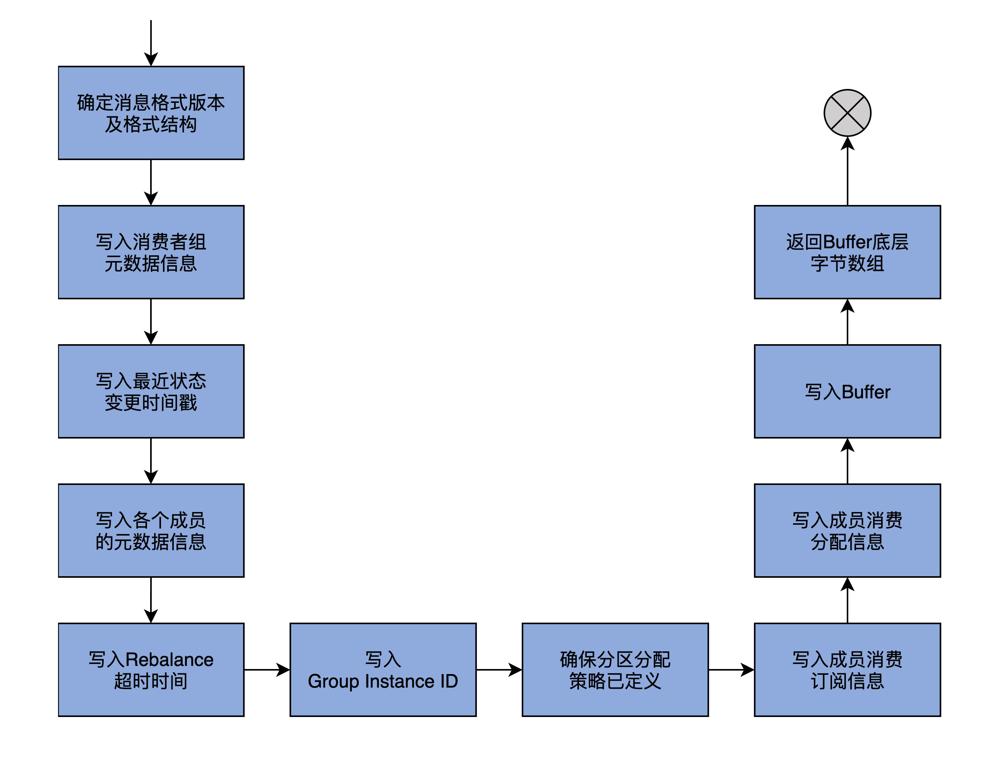
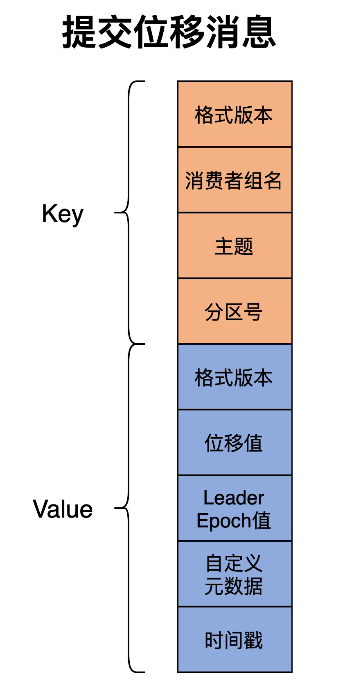
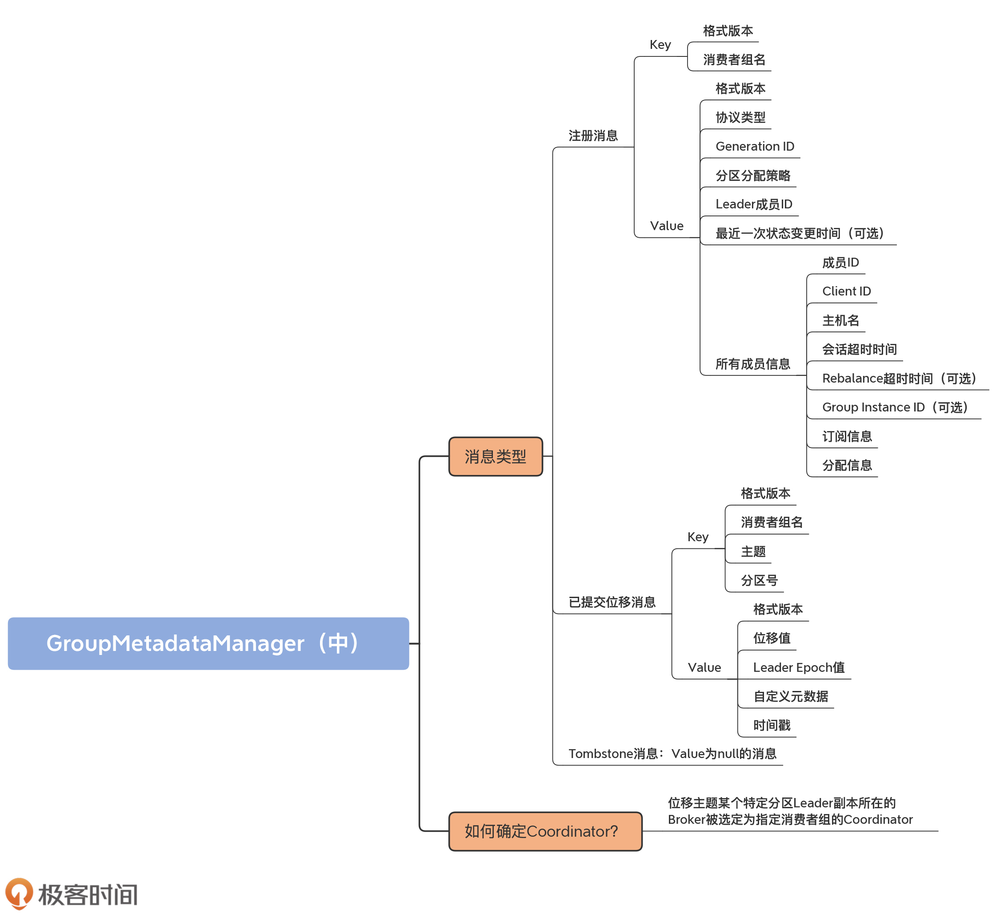

- 00 导读 构建Kafka工程和源码阅读环境、Scala语言热身.md.html
- 00 开篇词 阅读源码，逐渐成了职业进阶道路上的“必选项”.md.html
- 00 重磅加餐 带你快速入门Scala语言.md.html
- 01 日志段：保存消息文件的对象是怎么实现的？.md.html
- 02 日志（上）：日志究竟是如何加载日志段的？.md.html
- 03 日志（下）：彻底搞懂Log对象的常见操作.md.html
- 04 索引（上）：改进的二分查找算法在Kafka索引的应用.md.html
- 05 索引（下）：位移索引和时间戳索引的区别是什么？.md.html
- 06 请求通道：如何实现Kafka请求队列？.md.html
- 07 SocketServer（上）：Kafka到底是怎么应用NIO实现网络通信的？.md.html
- 08 SocketServer（中）：请求还要区分优先级？.md.html
- 09 SocketServer（下）：请求处理全流程源码分析.md.html
- 10 KafkaApis：Kafka最重要的源码入口，没有之一.md.html
- 11 Controller元数据：Controller都保存有哪些东西？有几种状态？.md.html
- 12 ControllerChannelManager：Controller如何管理请求发送？.md.html
- 13 ControllerEventManager：变身单线程后的Controller如何处理事件？.md.html
- 14 Controller选举是怎么实现的？.md.html
- 15 如何理解Controller在Kafka集群中的作用？.md.html
- 16 TopicDeletionManager： Topic是怎么被删除的？.md.html
- 17 ReplicaStateMachine：揭秘副本状态机实现原理.md.html
- 18 PartitionStateMachine：分区状态转换如何实现？.md.html
- 19 TimingWheel：探究Kafka定时器背后的高效时间轮算法.md.html
- 20 DelayedOperation：Broker是怎么延时处理请求的？.md.html
- 21 AbstractFetcherThread：拉取消息分几步？.md.html
- 22 ReplicaFetcherThread：Follower如何拉取Leader消息？.md.html
- 23 ReplicaManager（上）：必须要掌握的副本管理类定义和核心字段.md.html
- 24 ReplicaManager（中）：副本管理器是如何读写副本的？.md.html
- 25 ReplicaManager（下）：副本管理器是如何管理副本的？.md.html
- 26 MetadataCache：Broker是怎么异步更新元数据缓存的？.md.html
- 27 消费者组元数据（上）：消费者组都有哪些元数据？.md.html
- 28 消费者组元数据（下）：Kafka如何管理这些元数据？.md.html
- 29 GroupMetadataManager：组元数据管理器是个什么东西？.md.html
- 30 GroupMetadataManager：位移主题保存的只是位移吗？.md.html
- 31 GroupMetadataManager：查询位移时，不用读取位移主题？.md.html
- 32 GroupCoordinator：在Rebalance中，Coordinator如何处理成员入组？.md.html
- 33 GroupCoordinator：在Rebalance中，如何进行组同步？.md.html
- 特别放送（一）经典的Kafka学习资料有哪些？.md.html
- 特别放送（三）我是怎么度过日常一天的？.md.html
- 特别放送（二）一篇文章带你了解参与开源社区的全部流程.md.html
- 特别放送（五） Kafka 社区的重磅功能：移除 ZooKeeper 依赖.md.html
- 特别放送（四）20道经典的Kafka面试题详解.md.html
- 结束语 源码学习，我们才刚上路呢.md.html
- 捐赠
30 GroupMetadataManager：位移主题保存的只是位移吗？
你好，我是胡夕。今天，我们学习位移主题管理的源码。
位移主题，即consumer_offsets，是Kafka的两大内部主题之一（另一个内部主题是管理Kafka事务的，名字是transaction_state，用于保存Kafka事务的状态信息）。
Kafka创建位移主题的目的，是保存消费者组的注册消息和提交位移消息。前者保存能够标识消费者组的身份信息；后者保存消费者组消费的进度信息。在Kafka源码中，GroupMetadataManager类定义了操作位移主题消息类型以及操作位移主题的方法。该主题下都有哪些消息类型，是我们今天学习的重点。
说到位移主题，你是否对它里面的消息内容感到很好奇呢？我见过很多人直接使用kafka-console-consumer命令消费该主题，想要知道里面保存的内容，可输出的结果却是一堆二进制乱码。其实，如果你不阅读今天的源码，是无法知晓如何通过命令行工具查询该主题消息的内容的。因为这些知识只包含在源码中，官方文档并没有涉及到。
好了，我不卖关子了。简单来说，你在运行kafka-console-consumer命令时，必须指定--formatter "kafka.coordinator.group.GroupMetadataManager\$OffsetsMessageFormatter"，才能查看提交的位移消息数据。类似地，你必须指定GroupMetadataMessageFormatter，才能读取消费者组的注册消息数据。
今天，我们就来学习位移主题下的这两大消息类型。除此之外，我还会给你介绍消费者组是如何寻找自己的Coordinator的。毕竟，对位移主题进行读写的前提，就是要能找到正确的Coordinator所在。
消息类型
位移主题有两类消息：消费者组注册消息（Group Metadata）和消费者组的已提交位移消息（Offset Commit）。很多人以为，位移主题里面只保存消费者组位移，这是错误的！它还保存了消费者组的注册信息，或者说是消费者组的元数据。这里的元数据，主要是指消费者组名称以及成员分区消费分配方案。
在分别介绍这两类消息的实现代码之前，我们先看下Kafka为它们定义的公共服务代码。毕竟它们是这两类消息都会用到的代码组件。这些公共代码主要由两部分组成：GroupTopicPartition类和BaseKey接口。
我们首先来看POJO类GroupTopicPartition。它的作用是封装<消费者组名，主题，分区号>的三元组，代码如下：
case class GroupTopicPartition(group: String, topicPartition: TopicPartition) {
def this(group: String, topic: String, partition: Int) =
this(group, new TopicPartition(topic, partition))
// toString方法......
}
显然，这个类就是一个数据容器类。我们后面在学习已提交位移消息时，还会看到它的身影。
其次是BaseKey接口，它表示位移主题的两类消息的Key类型。强调一下，无论是该主题下的哪类消息，都必须定义Key。这里的BaseKey接口，定义的就是这两类消息的Key类型。我们看下它的代码：
trait BaseKey{
def version: Short // 消息格式版本
def key: Any // 消息key
}
这里的version是Short型的消息格式版本。随着Kafka代码的不断演进，位移主题的消息格式也在不断迭代，因此，这里出现了版本号的概念。至于key字段，它保存的是实际的Key值。在Scala中，Any类型类似于Java中的Object类，表示该值可以是任意类型。稍后讲到具体的消息类型时，你就会发现，这两类消息的Key类型其实是不同的数据类型。
好了，基础知识铺垫完了，有了对GroupTopicPartition和BaseKey的理解，你就能明白，位移主题的具体消息类型是如何构造Key的。
接下来，我们开始学习具体消息类型的实现代码，包括注册消息、提交位移消息和Tombstone消息。由于消费者组必须要先向Coordinator组件注册，然后才能提交位移，所以我们先阅读注册消息的代码。
注册消息
所谓的注册消息，就是指消费者组向位移主题写入注册类的消息。该类消息的写入时机有两个。
- 所有成员都加入组后：Coordinator向位移主题写入注册消息，只是该消息不含分区消费分配方案；
- Leader成员发送方案给Coordinator后：当Leader成员将分区消费分配方案发给Coordinator后，Coordinator写入携带分配方案的注册消息。
我们首先要知道，注册消息的Key是如何定义，以及如何被封装到消息里的。
Key的定义在GroupMetadataKey类代码中：
case class GroupMetadataKey(version: Short, key: String) extends BaseKey {
override def toString: String = key
}
该类的key字段是一个字符串类型，保存的是消费者组的名称。可见，注册消息的Key就是消费者组名。
GroupMetadataManager对象有个groupMetadataKey方法，负责将注册消息的Key转换成字节数组，用于后面构造注册消息。这个方法的代码如下：
def groupMetadataKey(group: String): Array[Byte] = {
val key = new Struct(CURRENT_GROUP_KEY_SCHEMA)
key.set(GROUP_KEY_GROUP_FIELD, group)
// 构造一个ByteBuffer对象，容纳version和key数据
val byteBuffer = ByteBuffer.allocate(2 /* version */ + key.sizeOf)
byteBuffer.putShort(CURRENT_GROUP_KEY_SCHEMA_VERSION)
key.writeTo(byteBuffer)
byteBuffer.array()
}
该方法首先会接收消费者组名，构造ByteBuffer对象，然后，依次向Buffer写入Short型的消息格式版本以及消费者组名，最后，返回该Buffer底层的字节数组。
你不用关心这里的格式版本变量以及Struct类型都是怎么实现的，因为它们不是我们理解位移主题内部原理的关键。你需要掌握的，是注册消息的Key和Value都是怎么定义的。
接下来，我们就来了解下消息体Value的代码实现。既然有groupMetadataKey方法，那么，源码也提供了相应的groupMetadataValue方法。它的目的是将消费者组重要的元数据写入到字节数组。我们看下它的代码实现：
def groupMetadataValue(
groupMetadata: GroupMetadata, // 消费者组元数据对象
assignment: Map[String, Array[Byte]], // 分区消费分配方案
apiVersion: ApiVersion // Kafka API版本号
): Array[Byte] = {
// 确定消息格式版本以及格式结构
val (version, value) = {
if (apiVersion < KAFKA_0_10_1_IV0)
(0.toShort, new Struct(GROUP_METADATA_VALUE_SCHEMA_V0))
else if (apiVersion < KAFKA_2_1_IV0)
(1.toShort, new Struct(GROUP_METADATA_VALUE_SCHEMA_V1))
else if (apiVersion < KAFKA_2_3_IV0)
(2.toShort, new Struct(GROUP_METADATA_VALUE_SCHEMA_V2))
else
(3.toShort, new Struct(GROUP_METADATA_VALUE_SCHEMA_V3))
}
// 依次写入消费者组主要的元数据信息
// 包括协议类型、Generation ID、分区分配策略和Leader成员ID
value.set(PROTOCOL_TYPE_KEY, groupMetadata.protocolType.getOrElse(""))
value.set(GENERATION_KEY, groupMetadata.generationId)
value.set(PROTOCOL_KEY, groupMetadata.protocolName.orNull)
value.set(LEADER_KEY, groupMetadata.leaderOrNull)
// 写入最近一次状态变更时间戳
if (version >= 2)
value.set(CURRENT_STATE_TIMESTAMP_KEY, groupMetadata.currentStateTimestampOrDefault)
// 写入各个成员的元数据信息
// 包括成员ID、client.id、主机名以及会话超时时间
val memberArray = groupMetadata.allMemberMetadata.map { memberMetadata =>
val memberStruct = value.instance(MEMBERS_KEY)
memberStruct.set(MEMBER_ID_KEY, memberMetadata.memberId)
memberStruct.set(CLIENT_ID_KEY, memberMetadata.clientId)
memberStruct.set(CLIENT_HOST_KEY, memberMetadata.clientHost)
memberStruct.set(SESSION_TIMEOUT_KEY, memberMetadata.sessionTimeoutMs)
// 写入Rebalance超时时间
if (version > 0)
memberStruct.set(REBALANCE_TIMEOUT_KEY, memberMetadata.rebalanceTimeoutMs)
// 写入用于静态消费者组管理的Group Instance ID
if (version >= 3)
memberStruct.set(GROUP_INSTANCE_ID_KEY, memberMetadata.groupInstanceId.orNull)
// 必须定义分区分配策略，否则抛出异常
val protocol = groupMetadata.protocolName.orNull
if (protocol == null)
throw new IllegalStateException("Attempted to write non-empty group metadata with no defined protocol")
// 写入成员消费订阅信息
val metadata = memberMetadata.metadata(protocol)
memberStruct.set(SUBSCRIPTION_KEY, ByteBuffer.wrap(metadata))
val memberAssignment = assignment(memberMetadata.memberId)
assert(memberAssignment != null)
// 写入成员消费分配信息
memberStruct.set(ASSIGNMENT_KEY, ByteBuffer.wrap(memberAssignment))
memberStruct
}
value.set(MEMBERS_KEY, memberArray.toArray)
// 向Buffer依次写入版本信息和以上写入的元数据信息
val byteBuffer = ByteBuffer.allocate(2 /* version */ + value.sizeOf)
byteBuffer.putShort(version)
value.writeTo(byteBuffer)
// 返回Buffer底层的字节数组
byteBuffer.array()
}
代码比较长，我结合一张图来帮助你理解这个方法的执行逻辑。

第1步，代码根据传入的apiVersion字段，确定要使用哪个格式版本，并创建对应版本的结构体（Struct）来保存这些元数据。apiVersion的取值是Broker端参数inter.broker.protocol.version的值。你打开Kafka官网的话，就可以看到，这个参数的值永远指向当前最新的Kafka版本。
第2步，代码依次向结构体写入消费者组的协议类型（Protocol Type）、Generation ID、分区分配策略（Protocol Name）和Leader成员ID。在学习GroupMetadata时，我说过，对于普通的消费者组而言，协议类型就是”consumer”字符串，分区分配策略可能是”range”“round-robin”等。之后，代码还会为格式版本≥2的结构体，写入消费者组状态最近一次变更的时间戳。
第3步，遍历消费者组的所有成员，为每个成员构建专属的结构体对象，并依次向结构体写入成员的ID、Client ID、主机名以及会话超时时间信息。对于格式版本≥0的结构体，代码要写入成员配置的Rebalance超时时间，而对于格式版本≥3的结构体，代码还要写入用于静态消费者组管理的Group Instance ID。待这些都做完之后，groupMetadataValue方法必须要确保消费者组选出了分区分配策略，否则就抛出异常。再之后，方法依次写入成员消费订阅信息和成员消费分配信息。
第4步，代码向Buffer依次写入版本信息和刚刚说到的写入的元数据信息，并返回Buffer底层的字节数组。至此，方法逻辑结束。
关于注册消息Key和Value的内容，我就介绍完了。为了帮助你更直观地理解注册消息到底包含了什么数据，我再用一张图向你展示一下它们的构成。

这张图完整地总结了groupMetadataKey和groupMetadataValue方法要生成的注册消息内容。灰色矩形中的字段表示可选字段，有可能不会包含在Value中。
已提交位移消息
接下来，我们再学习一下提交位移消息的Key和Value构成。
OffsetKey类定义了提交位移消息的Key值，代码如下：
case class OffsetKey(version: Short, key: GroupTopicPartition) extends BaseKey {
override def toString: String = key.toString
}
可见，这类消息的Key是一个GroupTopicPartition类型，也就是<消费者组名，主题，分区号>三元组。
offsetCommitKey方法负责将这个三元组转换成字节数组，用于后续构造提交位移消息。
def offsetCommitKey(
group: String, // 消费者组名
topicPartition: TopicPartition // 主题 + 分区号
): Array[Byte] = {
// 创建结构体，依次写入消费者组名、主题和分区号
val key = new Struct(CURRENT_OFFSET_KEY_SCHEMA)
key.set(OFFSET_KEY_GROUP_FIELD, group)
key.set(OFFSET_KEY_TOPIC_FIELD, topicPartition.topic)
key.set(OFFSET_KEY_PARTITION_FIELD, topicPartition.partition)
// 构造ByteBuffer，写入格式版本和结构体
val byteBuffer = ByteBuffer.allocate(2 /* version */ + key.sizeOf)
byteBuffer.putShort(CURRENT_OFFSET_KEY_SCHEMA_VERSION)
key.writeTo(byteBuffer)
// 返回字节数组
byteBuffer.array()
}
该方法接收三元组中的数据，然后创建一个结构体对象，依次写入消费者组名、主题和分区号。接下来，构造ByteBuffer，写入格式版本和结构体，最后返回它底层的字节数组。
说完了Key，我们看下Value的定义。
offsetCommitValue方法决定了Value中都有哪些元素，我们一起看下它的代码。这里，我只列出了最新版本对应的结构体对象，其他版本要写入的元素大同小异，课下你可以阅读下其他版本的结构体内容，也就是我省略的if分支下的代码。
def offsetCommitValue(offsetAndMetadata: OffsetAndMetadata,
apiVersion: ApiVersion): Array[Byte] = {
// 确定消息格式版本以及创建对应的结构体对象
val (version, value) = {
if (......) {
......
} else {
val value = new Struct(OFFSET_COMMIT_VALUE_SCHEMA_V3)
// 依次写入位移值、Leader Epoch值、自定义元数据以及时间戳
value.set(
OFFSET_VALUE_OFFSET_FIELD_V3, offsetAndMetadata.offset)
value.set(OFFSET_VALUE_LEADER_EPOCH_FIELD_V3,
offsetAndMetadata.leaderEpoch.orElse(RecordBatch.NO_PARTITION_LEADER_EPOCH))
value.set(OFFSET_VALUE_METADATA_FIELD_V3, offsetAndMetadata.metadata)
value.set(OFFSET_VALUE_COMMIT_TIMESTAMP_FIELD_V3, offsetAndMetadata.commitTimestamp)
(3, value)
}
}
// 构建ByteBuffer，写入消息格式版本和结构体
val byteBuffer = ByteBuffer.allocate(2 /* version */ + value.sizeOf)
byteBuffer.putShort(version.toShort)
value.writeTo(byteBuffer)
// 返回ByteBuffer底层字节数组
byteBuffer.array()
}
offsetCommitValue方法首先确定消息格式版本以及创建对应的结构体对象。对于当前最新版本V3而言，结构体的元素包括位移值、Leader Epoch值、自定义元数据和时间戳。如果我们使用Java Consumer API的话，那么，在提交位移时，这个自定义元数据一般是空。
接下来，构建ByteBuffer，写入消息格式版本和结构体。
最后，返回ByteBuffer底层字节数组。
与注册消息的消息体相比，提交位移消息的Value要简单得多。我再用一张图展示一下提交位移消息的Key、Value构成。

Tombstone消息
关于位移主题，Kafka源码中还存在一类消息，那就是Tombstone消息。其实，它并没有任何稀奇之处，就是Value为null的消息。因此，注册消息和提交位移消息都有对应的Tombstone消息。这个消息的主要作用，是让Kafka识别哪些Key对应的消息是可以被删除的，有了它，Kafka就能保证，内部位移主题不会持续增加磁盘占用空间。
你可以看下下面两行代码，它们分别表示两类消息对应的Tombstone消息。
// 提交位移消息对应的Tombstone消息
tombstones += new SimpleRecord(timestamp, commitKey, null)
// 注册消息对应的Tombstone消息
tombstones += new SimpleRecord(timestamp, groupMetadataKey, null)
无论是哪类消息，它们的Value字段都是null。一旦注册消息中出现了Tombstone消息，就表示Kafka可以将该消费者组元数据从位移主题中删除；一旦提交位移消息中出现了Tombstone，就表示Kafka能够将该消费者组在某主题分区上的位移提交数据删除。
如何确定Coordinator？
接下来，我们要再学习一下位移主题和消费者组Coordinator之间的关系。Coordinator组件是操作位移主题的唯一组件，它在内部对位移主题进行读写操作。
每个Broker在启动时，都会启动Coordinator组件，但是，一个消费者组只能被一个Coordinator组件所管理。Kafka是如何确定哪台Broker上的Coordinator组件为消费者组服务呢？答案是，位移主题某个特定分区Leader副本所在的Broker被选定为指定消费者组的Coordinator。
那么，这个特定分区是怎么计算出来的呢？我们来看GroupMetadataManager类的partitionFor方法代码：
def partitionFor(groupId: String): Int = Utils.abs(groupId.hashCode) % groupMetadataTopicPartitionCount
看到了吧，消费者组名哈希值与位移主题分区数求模的绝对值结果，就是该消费者组要写入位移主题的目标分区。
假设位移主题默认是50个分区，我们的消费者组名是“testgroup”，因此，Math.abs(“testgroup”.hashCode % 50)的结果是27，那么，目标分区号就是27。也就是说，这个消费者组的注册消息和提交位移消息都会写入到位移主题的分区27中，而分区27的Leader副本所在的Broker，就成为该消费者组的Coordinator。
总结
Kafka内部位移主题，是Coordinator端用来保存和记录消费者组信息的重要工具。具体而言，消费者组信息包括消费者组元数据以及已提交位移，它们分别对应于我们今天讲的位移主题中的注册消息和已提交位移消息。前者定义了消费者组的元数据信息，包括组名、成员列表和分区消费分配方案；后者则是消费者组各个成员提交的位移值。这两部分信息共同构成了位移主题的消息类型。
除了消息类型，我还介绍了消费者组确定Coordinator端的代码。明白了这一点，下次你的消费者组成员出现问题的时候，你就会知道，要去哪台Broker上去查找相应的日志了。
我们来回顾一下这节课的重点。
- 位移主题：即__consumer_offsets。该主题是内部主题，默认有50个分区，Kafka负责将其创建出来，因此你不需要亲自执行创建主题操作。
- 消息类型：位移主题分为注册消息和已提交位移消息。
- Tombstone消息：Value为null的位移主题消息，用于清除消费者组已提交的位移值和注册信息。
- Coordinator确认原则：消费者组名的哈希值与位移主题分区数求模的绝对值，即为目标分区，目标分区Leader副本所在的Broker即为Coordinator。

定义了消息格式，明确了Coordinator，下一步，就是Coordinator对位移主题进行读写操作了。具体来说，就是构建今天我们所学的两类消息，并将其序列化成字节数组，写入到位移主题，以及从位移主题中读取出字节数组，并反序列化成对应的消息类型。下节课，我们一起研究下这个问题。
课后讨论
请你根据今天的内容，用kafka-console-consumer脚本去读取一下你线上环境中位移主题的已提交位移消息，并结合readOffsetMessageValue方法的源码，说一下输出中的每个字段都是什么含义。
欢迎在留言区写下你的思考和答案，跟我交流讨论，也欢迎你把今天的内容分享给你的朋友。
© 2019 - 2023 Liangliang Lee. Powered by gin and hexo-theme-book.